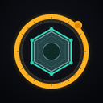

Fix it together
Help someone fix it, live, from your browser.
Tap the live picture to outline a part with SAM 3.1 on the Fixer's phone. Hold the mic to talk: Muse Voice Transcribe hears you and Muse Spark translates for them. All Meta model calls run on the Fixer's phone; this page holds no keys.